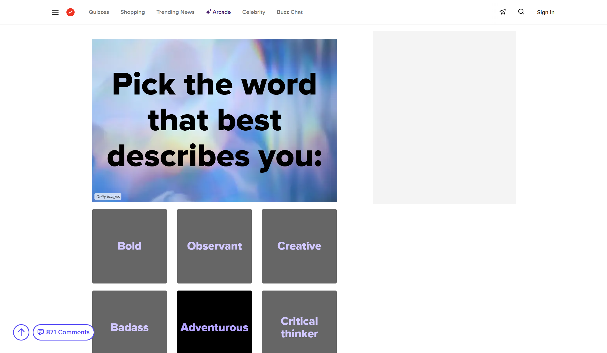
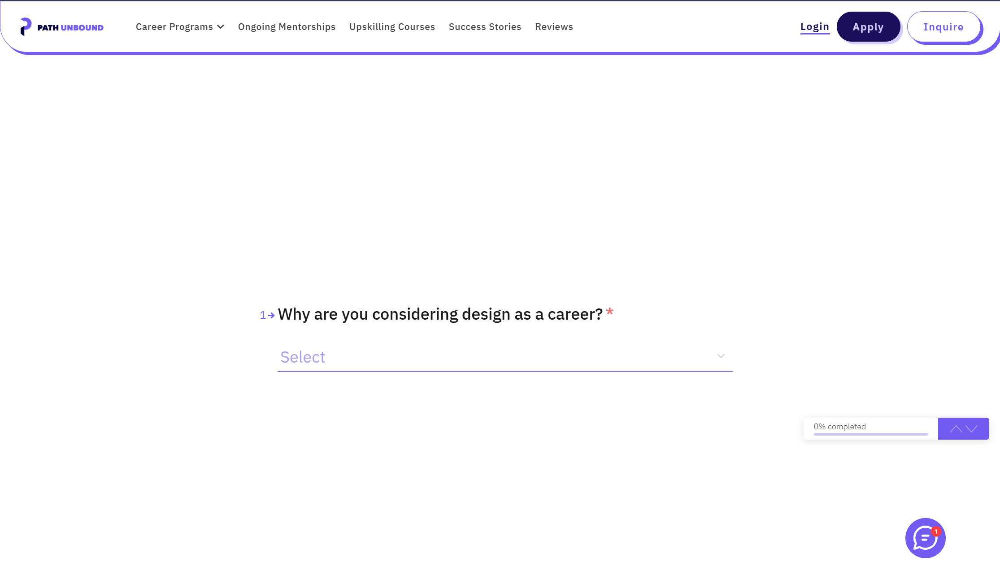

DES 157B - Interactive Media III - Spring 2026
Hunter Boyenga

A BuzzFeed quiz is a similar comparison to what I am trying to do. However, while the BuzzFeed quizzes will function similarly to my capstone project, my main goal is to make the whole experience more seamless. On the current BuzzFeed page, there is a lot of text and ads that make the experience confusing and hard to navigate.

Another similar project is by Path Unbound. This project is a similar quiz to match you with your design career. This project has some more of the minimalist features that I am looking to add to my project, but I would like to improve on the way it displays the answers, instead of having a dropdown menu.